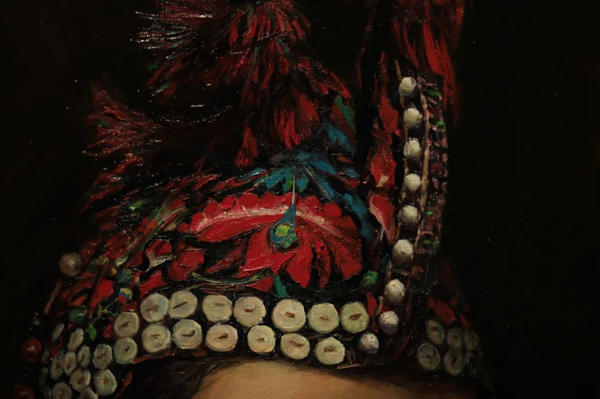
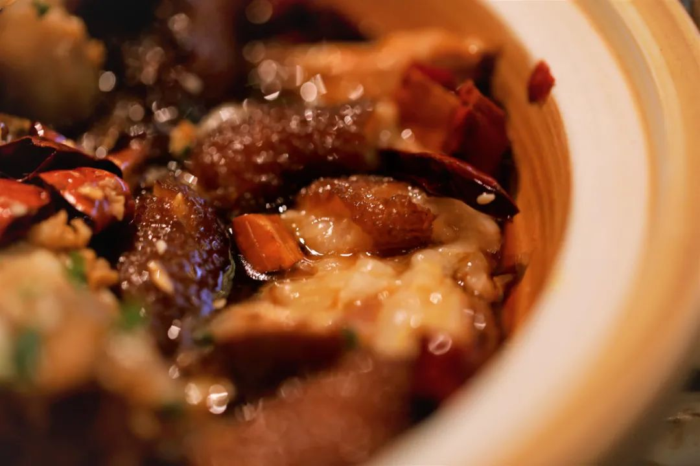

本文是张衔瑜第202篇推文
共计645个字，2张图
因为有了题目中所写的这个念头，所以最近很少写文。之所以尽量少用，是因为之前用得太多了。可能有一天我也会写尽量少用关联词，但也说不准。
稍微集中一些精力，比如现在坐到桌前电脑旁来打开Word写一些内容下来。也觉得很累。虽然很累的时候依然可以收发邮件处理消息、虽然也可以把基本盘保着不管是哪一块的营生、虽然也能正常吃饭睡倒是又开始睡得多一些了。
备忘录上记了很多的小点。也有没有写在备忘录上，可能我过几天就会模糊一些细节的上周出门之一趟。
贴手机膜的时候，把听筒和Home键的上下颠倒了。也就是说我现在正拿着一个不那么聪明的手机膜在用。也可以再买一张，也已经买了。好像现在这么着也能用着。我对生活的要求正在逐渐变化，变得更加专精化。如果只是全方位地在这那都要求细谨，这将是说法之一；如果是全方位地降到粗糙钝感，这又是说法之一。
我现在的感觉就像一会儿在冰窖里穿大袄子、打着手电看人家跳大神，一会儿又像是在热蒸笼里抹上了一层细砂盐的石头磊在烘烤架上旁边人一句一句的话就像是一瓢一瓢泼上去的水。加温蒸发，水变成汽。蒸笼里变得越来越湿热，相对湿度高得让人没法出汗，反教这些盐水蒸汽全往收缩的毛孔里去了。
本来想说，这样贴手机膜还挺朋克的。打算拍张照，说这是很朋克地贴手机方式。随便吧。当说随便吧的时候，意思是怎么着都行，请快点处理好让这件事情过去，不要再拿来烦心了。
今天下午去了一趟李自健美术馆。没想到，吃晚餐的时候拍的照片比在美术馆逛了一下午拍的照片都多。有点好笑


推文也是有底线的